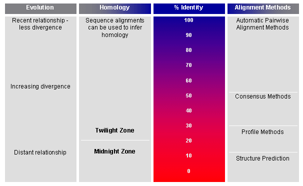

|  Fig 4.1 Percentage identity is an important indicator of the level of evolutionary divergence and functional/structural similarity between compared sequences. Different alignment methods have different areas of optimum application. Pairwise alignment algorithms, for example, perform well at high levels of identity, but below ~50%, the use of concensus information (from multiple alignments) may be necessary. Below ~30%, profile methods are generally used, because they allow insertions, deletions and substitutions to be modelled (see Chapter 3). Finally, at the lowest levels of identity, where alignments are no longer statistically significant, stucture prediction algorithms tend to be used (more on this in Chapters 5, 7 and 8). |